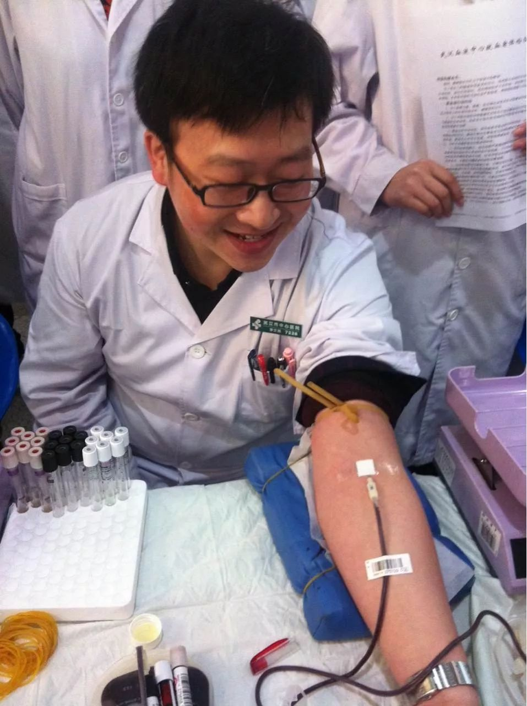

与李文亮的最后对话：如果康复了，我还会当大夫
原文链接 备份链接 李文亮生前发给中青报·中青网记者杨海的照片 中青报·中青网记者 杨海 2月7日凌晨2点58分，感染新冠肺炎的武汉市中心医院眼科大夫李文亮抢救无效去世。 2月2日，他在自己的头条号上更新自己的病情，他说前一天自己的新冠 …

李文亮生前发给中青报·中青网记者杨海的照片
中青报·中青网记者 杨海
2月7日凌晨2点58分，感染新冠肺炎的武汉市中心医院眼科大夫李文亮抢救无效去世。
2月2日，他在自己的头条号上更新自己的病情，他说前一天自己的新冠肺炎核酸检测终于出了结果，是阳性，自己被感染的父母已经出院，“谢谢大家的关心”。
他微信上依旧保留着“理论是灰色的,生命之树常青”的签名。

李文亮的微信朋友圈。他的微信头像是一幅蜡笔小新的漫画
1月31日，他接受了中青报·中青网记者的采访，这时，他已经住院19天。以下是记者与李文亮的对话实录：
记者：现在身体状况怎么样？
李文亮：精神和食欲好很多，但还是呼吸困难，不能活动，要绝对卧床休息。我的肺功能恢复得比较慢，其他还好。
记者：你当时怎么发现有SARS病毒这个消息的？判断的依据是什么？向上反映了吗？领导怎么决定的？
李文亮：当时是同事发给我一个患者的检测报告，上面临床病原体筛查结果显示，<高置信度>阳性指标里，第一项就是SARS冠状病毒。因为不是我的病人，我也不好向领导报告。
记者：你是什么时候判断这次肺炎是人传人的？那时感到害怕吗？
李文亮：1月9号时，我接诊了一个病人，然后得知这个病人和他的家属相继感染，我就确定这个病存在人传人了。很快，1月10日我自己就出现了咳嗽症状，11日我就开始发热，那时我感到了害怕。
记者：为什么害怕？你当时对这个病毒的致病性是怎么考虑的？
李文亮：我怕不能恢复。我当时咨询了呼吸内科的同事，他们觉得这次病毒的致病性可能不及SARS，然后安慰我年轻，没有什么特效药，就是熬时间。
记者：你12月30日就得知了病毒信息，自己为什么还被感染了？
李文亮 ： 因为我是眼科的，没想到这么快就接触到相关病人，有些大意了。 现在想想，一切来得太快了，太快了。
记者 ： 入院后你做病毒核酸检测了吗？ 为什么一直没有检测结果？
李文亮 ： 我也不清楚为什么一直没有确诊结果，但是我最近又做了检测，结果显示是阴性。
记者： 你看过自己的CT吗？ 那是什么样的？
李文亮 ： 第二次检查时，影像结果已经很不好了。 但是都是意料之中的，我知道这个病有个发展过程。 当时我不能离开高流量吸氧，侧个身都要喘很久，挺痛苦的。 （记者注： 李文亮提供的CT影像显示，在他第二次检查时，肺部已经有80%左右的区域变白。 ）
记者 ： 你觉得自己在微信群里说的是谣言吗？为什么要签字？
李文亮： 我觉得我说的不是谣言，我是医生，我相信检测结果。 而且后来我也强调是冠状病毒，具体还在分型。 我之所以签字，是因为我想让这件事赶快过去。 从派出所出来后，我还放松了些，毕竟没有被拘留，没想到后面发生了这么多事。
记者 ： 国家疾控中心的专家说你们是可敬的，你怎么看？
李文亮 ： 我只是个普通人，不是什么英雄。 但如果大家更早知道疫情，提早防护，肯定情况比现在更好。
记者 ： 12月30日，你把疫情信息发到同学群里后，他们有做什么准备吗？
李文亮 ： 他们很多人买了口罩，也提醒了家人。 截图外传后，大家也为我担心，为我鸣不平。
记者 ： 医院是从什么时候开始通知医生注意防护的？ 以什么形式通知的？
李文亮 ： 大概是1月10日左右，医院开完会，科室传达我们要注意防护，三级预防。 但当时恐怕做不到完全的三级防护。
记者 ： 如果整件事重新来一遍，你会怎么做？
李文亮 ： 我应该还是会提醒同学们注意。
记者： 康复后你还会当大夫吗？ 你会让自己的孩子选择这份职业吗？
李文亮 ： 我还会当的，没有别的技能。 但是我应该不会建议我的孩子当医生了，风险太高。
记者 ： 你现在最挂念的是什么？
李文亮 ： 最挂念我的家人，我的父母还在住院，我的爱人现在怀着孕。 现在什么都不重要了，我希望疫情赶快控制住，大家都能好好的。

一位市民在积雪上写下纪念李文亮的文字。 图片来自网络
原文链接 备份链接 李文亮生前发给中青报·中青网记者杨海的照片 中青报·中青网记者 杨海 2月7日凌晨2点58分，感染新冠肺炎的武汉市中心医院眼科大夫李文亮抢救无效去世。 2月2日，他在自己的头条号上更新自己的病情，他说前一天自己的新冠 …
原文链接 备份链接 2月7日上午，武汉市中心医院，市民自发献花悼念因感染新冠肺炎抢救无效逝世的医生李文亮，花束中有一张收据。这里是李文亮生前工作过的院区。2月7日凌晨3点48分，武汉中心医院官方微博宣布，该院眼科医生李文亮经全力抢救无效， …
原文链接 备份链接 【财新网】（记者 覃建行）入院18天后，李文亮终于知道了自己的核酸检验结果为阴性，这对他而言是一个好消息。他至今仍然躺在武汉市中心医院呼吸与重症医学监护室的隔离病房里，生活起居要靠医生护士照料。 李文亮此前疑似感染 …
原文链接 备份链接 34岁的李文亮是武汉市中心医院一位眼科医生，他率先披露不明肺炎有关情况，被截图转发而后受到单位约谈、警方训诫。在接诊过程中他自己被感染，多名同事和父母也被感染。图由受访者提供 武汉医生李文亮率先披露不明肺炎有关情况，受 …
原文链接 备份链接 1月23日上午10时20分，湖北武汉汉口火车站进站口，工作人员向旅客解释离汉通道暂时关闭的情况。中青报·中青网记者 王嘉兴/摄 中青报·中青网记者 王嘉兴 1月23日凌晨2时，武汉市疫情防控指挥部发布通告，自2020 …